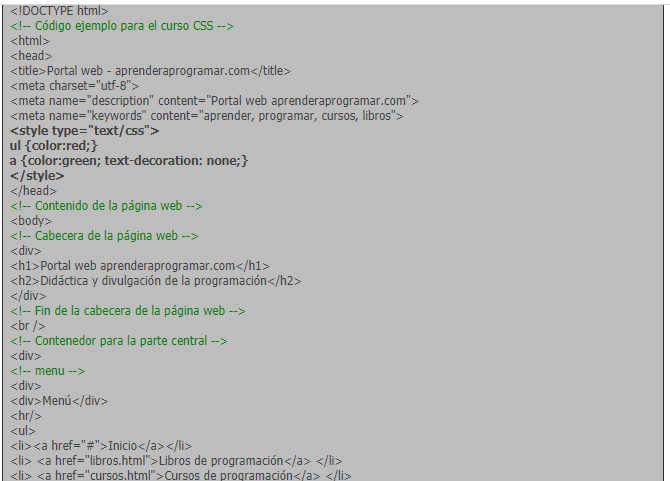

Ejemplos Estilos internos y Externos CSS
Ya hemos visto que existen estilos por defecto que aplican automáticamente los navegadores web cuando no hay estilos especificados, así como que podemos embeber código CSS en las propias etiquetas de HTML, “en línea”. Vamos a ver ahora dos formas adicionales de aplicar estilos CSS: en la parte inicial del documento HTML (aplicación de estilos interna o CSS interno) o en un archivo de extensión .css independiente del archivo HTML (aplicación de estilos externa o CSS externo). El aspecto que posee se determina por su tipo, estos pueden ser:
-
Las diferentes propiedades y valores se pueden poner
en una misma línea o en distintas líneas según se prefiera (siempre separados mediante punto y coma).:
<Dentro de las etiquetas … incluiremos una etiqueta de apertura de declaración de estilos . En HTML 5 no es necesario especificar type =”text/css” pero de momento seguimos recomendando que se use esta sintaxis.;

| Ejemplo | Descripción |
|---|---|
| <html> </html> | Define la raíz o principio de un documento HTML |
| <head> </head> | Área que contiene los metadatos correspondientes al documento HTML, es la cabecera. |
| <body> </body> | Define el cuerpo del documento HTML, aquí se inserta el contenido visible por el usuario. |
| <img> | Define una imagen en el documento HTML. |
| <hr> | Define un cambio temático en el docuemnto HTML, esta etiqueta traza una línea. |
| <br> | Establece un salto de línea en el docuemento HTML. |
| <a> </a> | Define un hipervínculo o enlace a un documento diferente o a una zona del mismo docuemnto HTML |
| <button> | Define un botón presionable que por lo general conlleva a una acción especifica. |
| <table> </table> | Define una tabla. |
| <strong> </strong> | Resalta un texto importante, establece la negrilla del texto que se encuentra en su interior. |